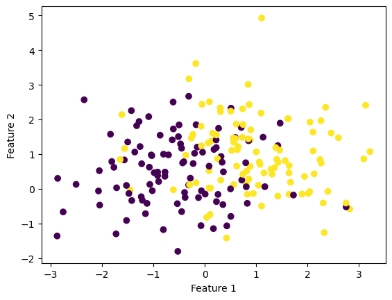

Gradient Descent for Optimizing Logistic Regression
Different Implementations of the Gradient Descent Algorithm, for Linearly Non-Separable Data
Author
Neil Dcruze
Published
March 10, 2023
Introduction to Gradient Descent Algorithm
A convex function - in simple terms - can be explained as a function which is “bowl shaped”. The interesting thing about convex functions is that if you keep taking steps towards what feels as “lower ground” - lower value of that convex function - you are ultimately bound to reach the minimum. A property of convex functions is that if there exists a local minima - \(w^*\) - it is also the global minimum - \(w\). Due to this property, we can “greedily” use the Gradient Descent algorithm, and be sure that we are ultimately bound to reach the global mininimum.
In this blog post, we are going to explore three different approaches of Gradient Descent:
Regular Gradient Descent
Stochastic Gradient Descent
Stochastic Gradient Descent with Momentum
We will see how these three different approaches of Gradient Descent perform - how long they take to converge and find the minimum! Furthermore, we will also perform some experiments which will highlight some of the nuances of these approaches.
Here is an image of how a convex function looks, for visualization purposes:
Implementing Gradient Descent
#implementing the necessary packagesfrom LogisticRegression import LogisticRegressionfrom sklearn.datasets import make_blobsfrom matplotlib import pyplot as pltimport numpy as np# logistic regression tends to involve a lot of log(0) and things that wash out in the end. np.seterr(all='ignore')
In the following section, we are using the make_blobs function of sklearn.datasets to create synthetic data for our experimentation. In this case, we are creating two clusters of data, which are centered around two different areas - and have different labels \(0\) and \(1\). These two clusters purposefully have overlap, and are not linearly separable. This means that one cannot imagine a straight line which perfectly divides the data points into two regions - one group or the other.
#arbitrarily setting the seed number to 12345 to ensure reproducibilitynp.random.seed(12345)#setting the number of points we wantn =200#setting the number of featuresfeatures =2#using make_blobs function to create 2 clusters of 200 data points - centered #randomly around (-1,-1) and (1,1) - making them linearly inseparable X, y = make_blobs(n_samples = n, n_features = features, centers = [(-1,-1),(1,1)])
#plotting the clusters generated by the make_blobs functionfig = plt.scatter(X[:,0], X[:,1], c = y)xlab = plt.xlabel("Feature 1")ylab = plt.ylabel("Feature 2")

#creating an instance of the LogisticRegression classLR = LogisticRegression()
We are calling the fit method of the LogisticRegression class. This method uses the exponential loss function to calculate the loss, and updates the weight vector, using the Gradient Descent algorithm. The gradient function for the exponential loss function, has been borrowed from the lecture notes on Gradient Descent!
LR.fit(X, y, 0.1, 1000)
For reference, the code had saved the first weight vector. Therefore, we can visualize how well the first linear classifier performed, and its associated loss.
We can then compare this to the visualization of the final weight vector (after performing gradient descent) - how it performed the linear classification, and its associated loss.
Therefore, we can clearly see how the final set of weight vector (inclusive of bias) has a much less associated loss, and does a much better job at performing the linear classification. This can also be seen visually, by looking at the classification in the image above (with the final weight vector), and the one above it (with the initial - random - weight vector).
Explanation of Important Elements of the Gradient Descent Algorithm
In this section of the blog post, we are going to look at some of the functions which are used in performing our Logistic Regression using Gradient Descent!